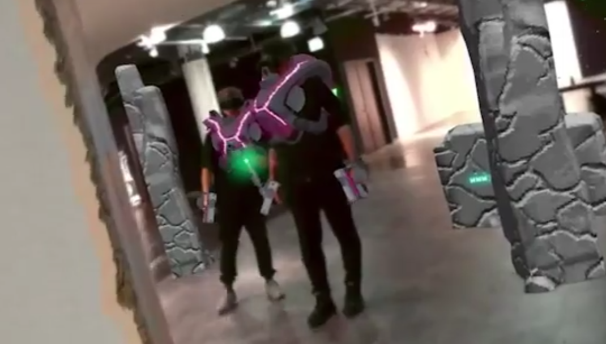
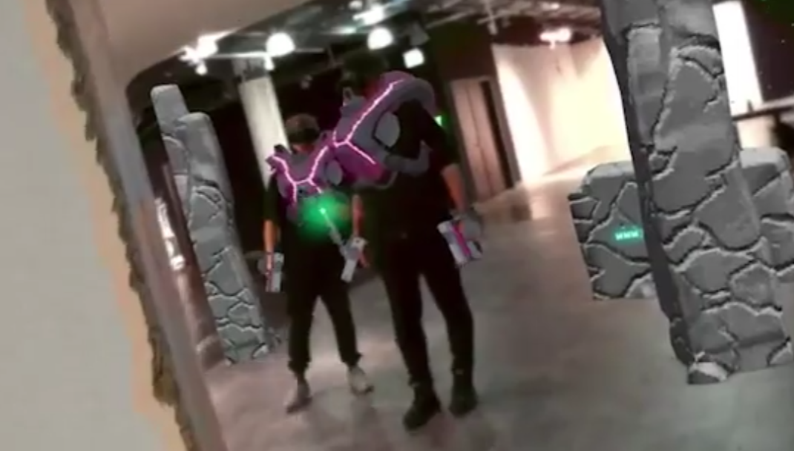
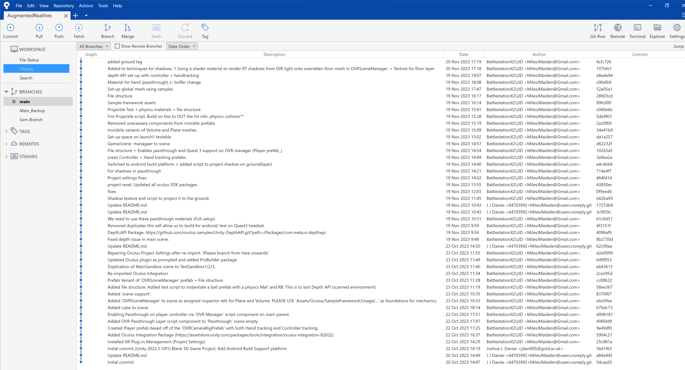
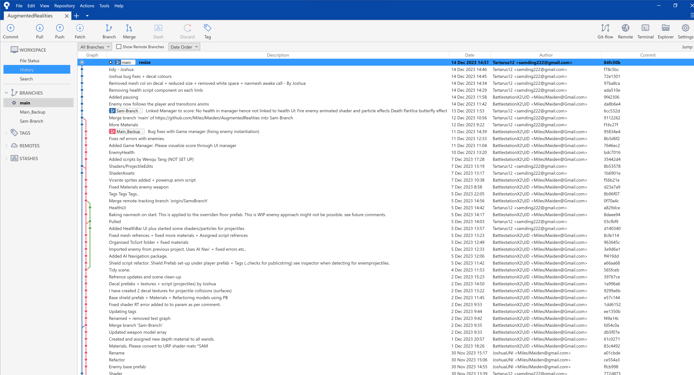
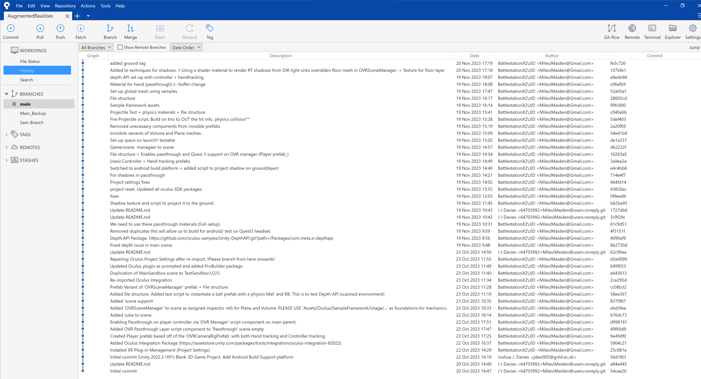
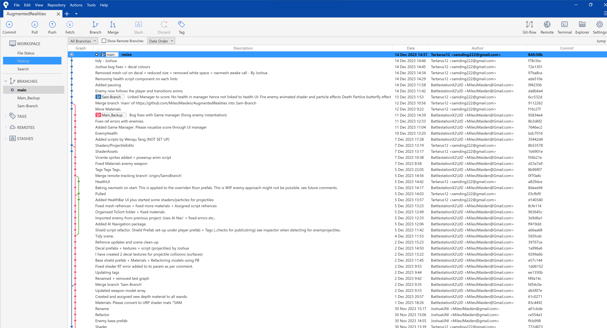

Context
This project was Created a part of the Augmented Realities module at the University of London Goldsmiths. And here's the team!
I played a pivotal role in this project. Covering; Git repo management, Lead programming, reseach and others..
Below you will find more detailed and contextual overview of the project as a whole and my personal contributions.
Please Right-Click/ Open new window for illegible images.
Concept and Theme
We aimed to create a Laser tag inspired duel arena game for the Meta Quest 3 called "Aether Tag". We kept this concept quite broad throughout. This became an advantage of our agile approach as we needed to pull back on scope.
The core initial concept was a multiplayer AR experience that allows two teams to compete against one another in a single open play space using the Quest 3s pass-through capability. To do this, we initially planned to use the Unity-Discover repo which would have afforded an application template with Photon and Oculus' SDK dependencies from the begining. We opted as a group not to do this as it was complex and did not include Meta Depth.API experimental package.'
Focusing on both; Human and Environmental tracking proved very taxing on time, thus; our core docys was on the environment. We used the tools afforded to us by the Oculus’ all-in-one SDK to demonstrate the art of the possible in the field of AR.
 

Research
Researching other Games and applications that posses our inspired mechanics and implementation was done by myself.
Due to the nature of this project being an Augmented Reality Game that utilizes pass-through, careful design considerations needed to be made.
Existing AR Apps
Codename Neon (Niantic)
An AR multiplayer game that allows multiple users to play a Laser Tag inspired game that tracks players and used the environment.
Matter AR
An AR multiplayer game that allows player to first augment their environment to create a dynamic and interactive experience in a single static space.
-
Pros:
- Interactive Environmental Augmentation (Destructible walls..)
- Human tracking (Name, Health..)
- Simple but effective gameplay loops and Systems
- Real time play space manipulation
- Well established game dynamics real-time feedback
-
Cons:
- Disruptive UXD (Hands obscure display)
- Depth Accuracy
- Non-Hands-free experience
- Lack of innovation on the laser tag concept
 



Technical Implementation
Environment Augmentation
I decided to Utilize the Quest3 Meta experimental Depth.API package for implementing depth to in-game elements. This allows the scene model data captured by the device to occlude in-game elements.
Using the Quest3s Depth/LiDAR sensors we can capture scene model data (Planes, Volumed spaces and global meshes). These elements can be overridden to augment the world in real-time and instantiate In-Game elements.
Gameplay Infrastructure
I used a controller based input system instead of hand based tracking using pre-defined/ custom gestures due to ease of use.
The game sports a lightweight gameplay loop including game elements such as waves of an incrementing amount of enemies That use Unitys AI Navigation package.
I created a simple but effective combat system based on Rock-Paper-Scissors (Fire-Water-Grass) Using two synchronized arrays of weapons and projectiles that can only be used against specific enemies
A unique shield system to deflect and block projectiles, with shield broken and re-charging states.
Looking Forward
In reflection, the game could be expanded in a variety of different ways. Re-visiting the conceptualizing stage of project gives us some great ideas on where to start. Two of the most 'Stand-out' additions for me would be:
IK (Inverse Kinematic) enemy rigs and rag-doll effects for AI enemies that use the AI Navigation system.
Phtoon Fusion would be a great and easy to impolement multiplayer system. This would introduce challenges such as broadcasting essenetial player and game elements. i.e. position, projectiles, power-ups
Project Contribtuions and Reflections
Regarding the weighting of contributions, a look at the projects (GitHub) repository clearly indicates that I contributed to 90%+ of the coding related challenges.